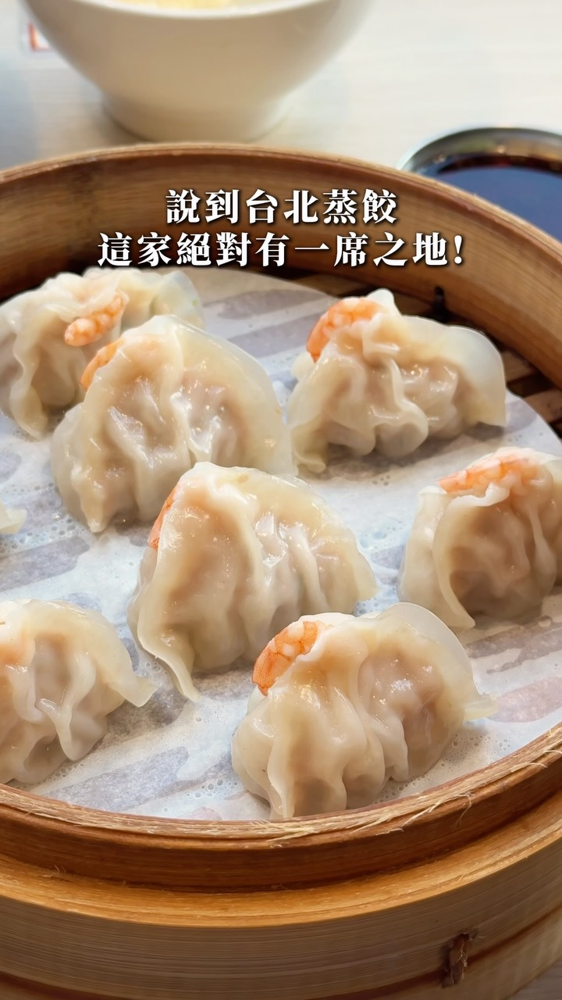

城市記憶 Reel｜亓家蒸餃：台北小巨蛋／南京三民附近的薄皮鮮蝦蒸餃
來源是城市記憶 CitiesMemory 的 Facebook Reel。公開 metadata 與登出頁可見文字顯示，這則影片介紹台北松山區「亓家蒸餃」，主打薄皮、餡料飽滿與整尾蝦鮮蝦蒸餃。

一句話摘要
亓家蒸餃是台北小巨蛋／南京三民站附近可收藏的小吃點：招牌鮮蝦蒸餃把整尾蝦包入薄皮蒸餃，高麗菜與泡菜口味也強調蔬菜爽脆口感；適合放進「台北松山區小吃／捷運沿線美食」清單。
可確認的公開內容
- Reel 作者：城市記憶 CitiesMemory。
- Facebook canonical：`https://www.facebook.com/reel/27995012630103703`。
- 公開頁可見互動：約 605 個心情、8 則留言、89 次分享。
- 影片音訊：城市記憶 CitiesMemory · 原始音訊。
- 貼文標題：`皮超薄的超強蒸餃！！！`
- 店名：亓家蒸餃。
- 推薦餐點與描述：
- 招牌「鮮蝦蒸餃」：整尾蝦包進蒸餃，透亮餃皮下可見橘紅蝦尾。
- 高麗菜口味：可吃到蔬菜爽脆口感。
- 泡菜口味：越吃越夠味。
- 評價語氣：雖然漲價不少，但仍值得回訪。
店家資訊
- 店名：亓家蒸餃
- 營業時間：10:30–15:00 / 17:00–21:00（週末公休）
- 電話：02 2760 1935
- 地址：臺北市松山區復盛里光復南路 9 號 1 樓
- 交通：台北小巨蛋／南京三民捷運站
欒帥可用的收藏方式
這筆適合放在「生活實用／台北美食」而不是 AI 技術主題。後續若要做台北餐廳清單，可以用下列分類：
- 區域：松山區
- 捷運：台北小巨蛋、南京三民
- 類型：蒸餃、小吃、平價餐館
- 招牌：鮮蝦蒸餃、高麗菜蒸餃、泡菜蒸餃
- 適合情境：小巨蛋活動前後、南京東路／光復南路附近用餐、想吃熱食小吃
注意事項
- 本次只取得 Facebook 公開 metadata 與可見貼文文字，未登入 Facebook，也未取得完整影片逐格內容。
- 營業時間、價格與公休日可能變動；實際前往前建議再以電話或地圖資訊確認。
- 貼文提到「雖然漲價了不少」，但未提供明確價格，因此本文不保存價格資訊。
Why it matters
欒帥也會分享非 AI 類的生活實用內容；這類美食 Reel 若有明確店名、地址、交通與推薦品項，就值得保存成可搜尋的生活知識。亓家蒸餃這則資料完整度高，適合納入台北美食清單，之後可和其他松山區、小巨蛋、南京三民周邊餐廳一起整理。